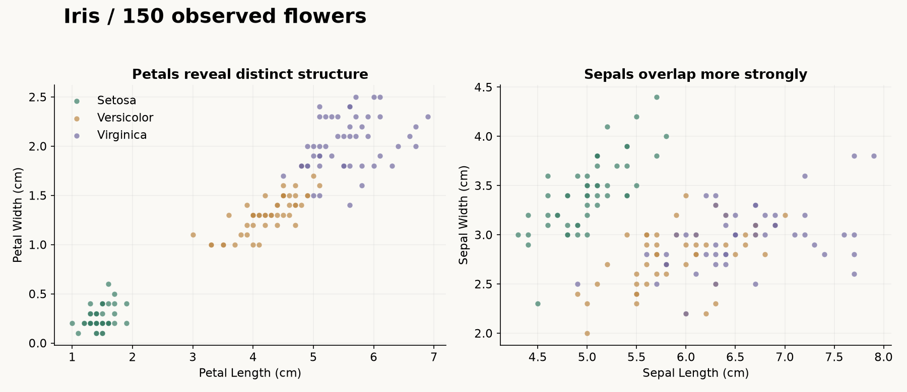
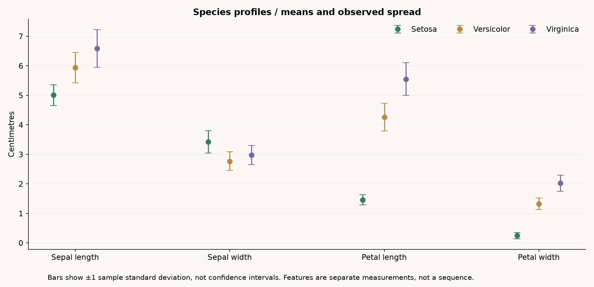

Iris dataset exploration.
Explore three Iris species through authentic measurements, clear distributions and reproducible descriptive analysis.

What I built
Preserved the original Iris coursework and added a portable, tested visual investigation of all 150 supplied observations.
Why it matters
Before choosing a model, it helps to see how measurements vary and which features reveal useful structure. Clear exploratory analysis makes a dataset easier to understand.
How it works
- 01
Compare petal and sepal relationships using the observed species labels.
- 02
Inspect all four feature distributions, with every measurement visible and units in centimetres.
- 03
Compare species mean profiles and observed spread, then inspect the saved summaries and dataset provenance.
What it demonstrates
Data preparation, exploratory analysis, reproducible notebooks and selecting visuals that explain a pattern.
Evidence, with context.
150 supplied observations, 50 per species. Mean petal lengths: Setosa 1.462 cm, Versicolor 4.260 cm, Virginica 5.552 cm. Setosa forms a distinct petal cluster in these observations; Versicolor and Virginica overlap. All four measurements and all species labels are observed data, not model predictions. Repeated measurement rows are retained; this descriptive teaching sample does not establish general classification performance.
Verified source: 2a1cfdf6a394 · Tests and visual capture ↗



Scope and limitations
This is descriptive exploration of a small, familiar teaching dataset. Separation in these observations is not independent validation of a classifier or evidence of general performance. Pooled correlations mix species and do not establish causation. Identical measurement rows are retained because equality alone does not prove duplicate sampling. The supplied CSV is preserved; historical Iris variants differ in two documented observations.
Visual provenance and source attribution are recorded in the evidence register ↗.
Under the surface.
Architecture, methods and improvements
A portable script validates the four positive finite measurement columns and three groups of fifty, records the input SHA-256 and software versions, and exports twelve feature/species summaries plus pooled correlations. Three tests reconcile summaries with independent raw-row calculations, validate provenance/counts and reproduce all numeric outputs. Standard-deviation bars describe observed variation, not uncertainty of the mean. Original analysis.py and Project.ipynb remain intact.
Try it locally
Install requirements.txt, run python explore_iris.py and python -m unittest discover -p "test_*.py" -v. Inspect results/species-summary.csv, results/analysis.json and the preserved original notebook.
The portfolio is a static GitHub Pages site. Server applications run locally; the portfolio does not collect bookings, credentials or payments.